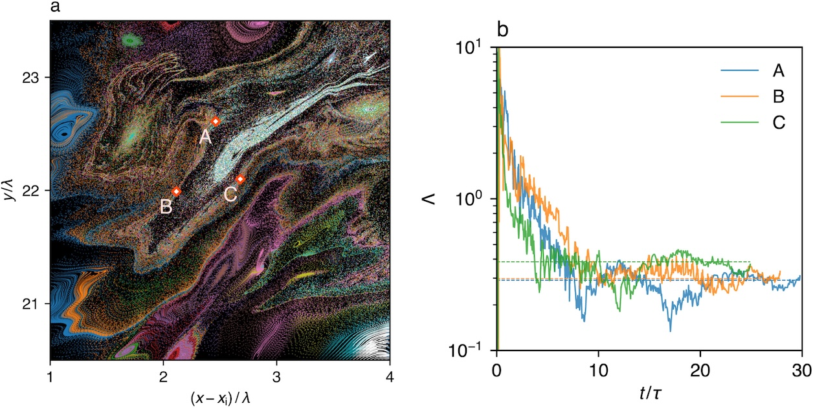
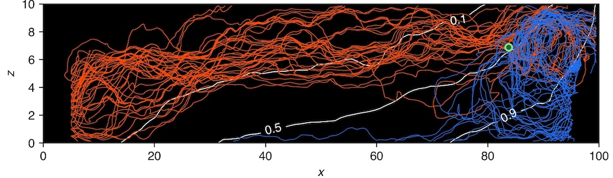
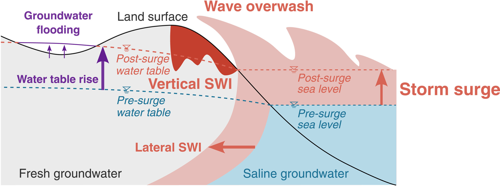
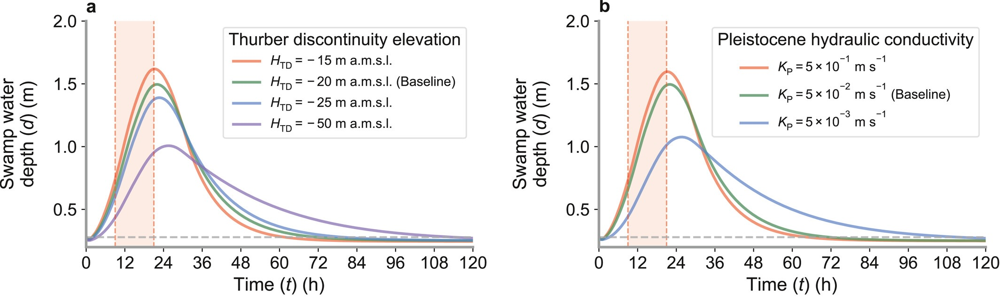
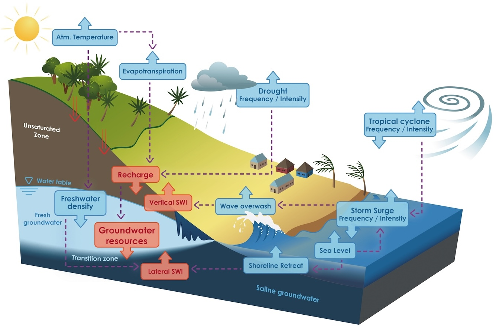
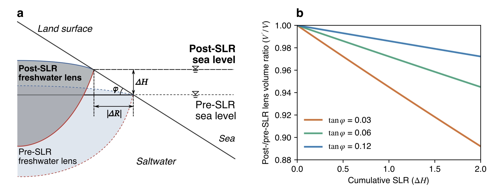

Transport and mixing in porous media
Heterogeneity and transient forcing, such as tides, can generate complex transport processes in porous media, including time-dependent spreading and chaotic mixing. This work combines numerical flow and transport simulations with particle tracking and stochastic transport theory to uncover the mechanisms underlying these behaviours and develop quantitative descriptions of their temporal evolution. The broader aim is to shed new light on fundamental transport dynamics driven by land–ocean interactions, achieve more accurate representations of subsurface transport processes, and provide insights relevant to subsurface contamination and seaward nutrient export.


Related publications
Tajima, S. & Dentz, M. (2025). Tides and Heterogeneity Drive Trapping and Chaotic Mixing in Coastal Aquifers. Water Resources Research, 61(11), e2025WR040620. LinkTajima, S. & Dentz, M. (2025). Transient forcing in heterogeneous aquifers drives solute containment and chaotic mixing. Advances in Water Resources, 203, 105021. Link
Tajima, S., Dentz, M., Liu, J., & Tokunaga, T. (2024). Time-dependent dispersion coefficients for the evolution of displacement fronts in heterogeneous porous media. Advances in Water Resources, 189, 104714. Link
Storm-surge impacts on coastal surface–subsurface systems
Storm surges affect coastal surface–subsurface systems through wave overwash and subsequent vertical seawater intrusion, as well as groundwater flooding driven by the subsurface propagation of a hydraulic head rise. Using integrated surface–subsurface numerical simulations, this work investigates the temporal dynamics of these processes and the influence of hydrogeological settings on these dynamics. The goal is to advance mechanistic understanding of hydrological processes driven by storm surges and improve coastal hazard assessments, thereby contributing to the resilience of coastal regions.


Related publications
Tajima, S., Brunner, P., Liu, J., Delottier, H., & Tokunaga, T. (2023). Groundwater flooding on atolls caused by storm surges: Effects of the dual-aquifer configuration. Water Resources Research, 59(10), e2023WR034762. LinkTajima, S., Therrien, R., & Brunner, P. (2026). Climate change alters post-surge recovery of coastal aquifers. Water Resources Research, 62(3), e2025WR042142. Link
Tajima, S., Therrien, R., Purtschert, R., & Brunner, P. (2026). Groundwater contribution to cyclone-driven compound flooding. Preprint at ESS Open Archive. Link
Island groundwater resources under climate change
Groundwater is a vital source of freshwater on small islands, yet its availability is highly sensitive to climate change through sea-level rise and shifts in the intensity and frequency of extreme events such as storm surges. This work uses integrated surface–subsurface simulations to assess climate change impacts on freshwater availability under different climate scenarios, while developing new tools to quantify these impacts with limited data and computational resources. It also seeks to bring this process-based hydrogeological understanding into dialogue with diverse knowledge systems through collaboration with a broad range of stakeholders, thereby supporting transdisciplinary research that can inform sustainable groundwater management and climate adaptation.


Related publications
Tajima, S., Liu, J., & Tokunaga, T. (2022). Estimating freshwater lens volume in highly permeable aquifers. Hydrological Research Letters, 16(1), 12-17. LinkTajima, S., Therrien, R., & Brunner, P. (2026). Climate change alters post-surge recovery of coastal aquifers. Water Resources Research, 62(3), e2025WR042142. Link
Tajima, S., Therrien, R., Purtschert, R., & Brunner, P. (2026). Boundary-integral solutions for freshwater lens volume in arbitrarily shaped islands. Preprint at ESS Open Archive. Link
Tajima, S., Purtschert, R., Savard, M.–C., Rosier, M., Kotra, K. K., Therrien, R., Coulombe, C., Müller, C., Masse–Dufresne, J., Richard, F., Bertone, L., Barbecot, F., Lucas–Picher, P., Tigona, R., Corcho Albarado, J. A., & Brunner, P. (2026). Groundwater in the Pacific Islands under climate change. Preprint at ESS Open Archive. Link